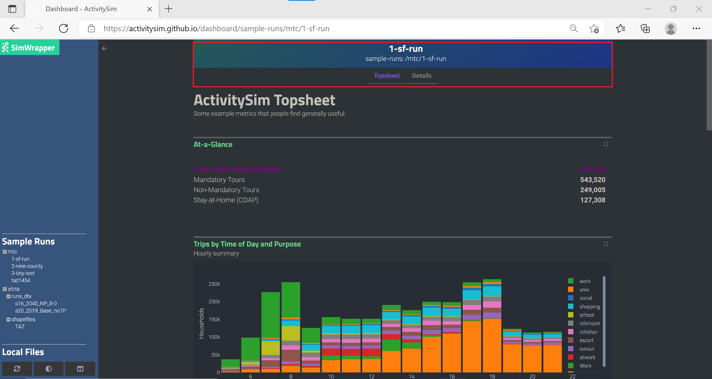
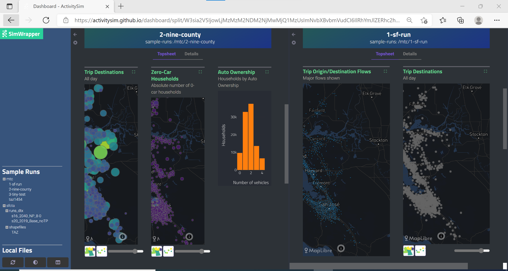

Core Components#
ActivitySim’s core components include features for multiprocessing, data management, utility expressions, choice models, person time window management, and helper functions. These core components include the multiprocessor, network LOS (skim) manager, the data pipeline manager, the random number manager, the tracer, sampling methods, simulation methods, model specification readers and expression evaluators, choice models, timetable, transit virtual path builder, and helper functions.
Multiprocessing#
Parallelization using multiprocessing
API#
Data Management#
Input#
Input data table functions
API#
LOS#
Network Level of Service (LOS) data access
API#
Skims#
Skims data access
API#
- class activitysim.core.skim_dictionary.DataFrameMatrix(df)#
Utility class to allow a pandas dataframe to be treated like a 2-D array, indexed by rowid, colname
For use in vectorized expressions where the desired values depend on both a row column selector e.g. size_terms.get(df.dest_taz, df.purpose)
df = pd.DataFrame({'a': [1,2,3,4,5], 'b': [10,20,30,40,50]}, index=[100,101,102,103,104]) dfm = DataFrameMatrix(df) dfm.get(row_ids=[100,100,103], col_ids=['a', 'b', 'a']) returns [1, 10, 4]
- get(row_ids, col_ids)#
- Parameters:
- row_ids - list of row_ids (df index values)
- col_ids - list of column names, one per row_id,
specifying column from which the value for that row should be retrieved
- Returns:
- series with one row per row_id, with the value from the column specified in col_ids
- class activitysim.core.skim_dictionary.MazSkimDict(skim_tag, network_los, taz_skim_dict)#
MazSkimDict provides a facade that allows skim-like lookup by maz orig,dest zone_id when there are often too many maz zones to create maz skims.
Dependencies: network_los.load_data must have already loaded: taz skim_dict, maz_to_maz_df, and maz_taz_df
It performs lookups from a sparse list of maz-maz od pairs on selected attributes (e.g. WALKDIST) where accuracy for nearby od pairs is critical. And is backed by a fallback taz skim dict to return values of for more distant pairs (or for skims that are not attributes in the maz-maz table.)
- get_skim_usage()#
return set of keys of skims looked up. e.g. {‘DIST’, ‘SOV’}
- Returns:
- set:
- lookup(orig, dest, key)#
Return list of skim values of skims(s) at orig/dest in skim with the specified key (e.g. ‘DIST’)
Look up in sparse table (backed by taz skims) if key is a sparse_key, otherwise look up in taz skims For taz skim lookups, the offset_mapper will convert maz zone_ids directly to taz skim indexes.
- Parameters:
- orig: list of orig zone_ids
- dest: list of dest zone_ids
- key: str
- Returns:
- Numpy.ndarray: list of skim values for od pairs
- sparse_lookup(orig, dest, key)#
Get impedence values for a set of origin, destination pairs.
- Parameters:
- orig1D array
- dest1D array
- keystr
skim key
- Returns:
- valuesnumpy 1D array
- class activitysim.core.skim_dictionary.OffsetMapper(offset_int=None, offset_list=None, offset_series=None)#
Utility to map skim zone ids to ordinal offsets (e.g. numpy array indices)
Can map either by a fixed offset (e.g. -1 to map 1-based to 0-based) or by an explicit mapping of zone id to offset (slower but more flexible)
Internally, there are two representations:
- offset_int:
int offset which when added to zone_id yields skim array index (e.g. -1 to map 1-based zones to 0-based index)
- offset_series:
pandas series with zone_id index and skim array offset values. Ordinarily, index is just range(0, omx_size) if series has duplicate offset values, this can map multiple zone_ids to a single skim array index (e.g. can map maz zone_ids to corresponding taz skim offset)
- map(zone_ids)#
map zone_ids to skim indexes
- Parameters:
- zone_idslist-like (numpy.ndarray, pandas.Int64Index, or pandas.Series)
- Returns:
- offsetsnumpy array of int
- set_offset_int(offset_int)#
specify int offset which when added to zone_id yields skim array index (e.g. -1 to map 1-based to 0-based)
- Parameters:
- offset_intint
- set_offset_list(offset_list)#
Convenience method to set offset_series using an integer list the same size as target skim dimension with implicit skim index mapping (e.g. an omx mapping as returned by omx_file.mapentries)
- Parameters:
- offset_listlist of int
- set_offset_series(offset_series)#
- Parameters:
- offset_series: pandas.Series
series with zone_id index and skim array offset values (can map many zone_ids to skim array index)
- class activitysim.core.skim_dictionary.Skim3dWrapper(skim_dict, orig_key, dest_key, dim3_key)#
This works the same as a SkimWrapper above, except the third dim3 is also supplied, and a 3D lookup is performed using orig, dest, and dim3.
- Parameters:
- skims: Skims
This is the Skims object to wrap
- dim3_keystr
This identifies the column in the dataframe which is used to select among Skim object using the SECOND item in each tuple (see above for a more complete description)
- set_df(df)#
Set the dataframe
- Parameters:
- dfDataFrame
The dataframe which contains the orig, dest, and dim3 values
- Returns:
- self (to facilitiate chaining)
- class activitysim.core.skim_dictionary.SkimDict(skim_tag, skim_info, skim_data)#
A SkimDict object is a wrapper around a dict of multiple skim objects, where each object is identified by a key.
Note that keys are either strings or tuples of two strings (to support stacking of skims.)
- get_skim_usage()#
return set of keys of skims looked up. e.g. {‘DIST’, ‘SOV’}
- Returns:
- set:
- lookup(orig, dest, key)#
Return list of skim values of skims(s) at orig/dest in skim with the specified key (e.g. ‘DIST’)
- Parameters:
- orig: list of orig zone_ids
- dest: list of dest zone_ids
- key: str
- Returns:
- Numpy.ndarray: list of skim values for od pairs
- lookup_3d(orig, dest, dim3, key)#
3D lookup of skim values of skims(s) at orig/dest for stacked skims indexed by dim3 selector
The idea is that skims may be stacked in groups with a base key and a dim3 key (usually a time of day key)
On import (from omx) skims stacks are represented by base and dim3 keys seperated by a double_underscore
e.g. DRV_COM_WLK_BOARDS__AM indicates base skim key DRV_COM_WLK_BOARDS with a time of day (dim3) of ‘AM’
Since all the skimsa re stored in a single contiguous 3D array, we can use the dim3 key as a third index and thus rapidly get skim values for a list of (orig, dest, tod) tuples using index arrays (‘fancy indexing’)
- Parameters:
- orig: list of orig zone_ids
- dest: list of dest zone_ids
- block_offsets: list with one dim3 key for each orig/dest pair
- Returns:
- Numpy.ndarray: list of skim values
- wrap(orig_key, dest_key)#
return a SkimWrapper for self
- wrap_3d(orig_key, dest_key, dim3_key)#
return a SkimWrapper for self
- property zone_ids#
Return list of zone_ids we grok in skim index order
- Returns:
- ndarray of int domain zone_ids
- class activitysim.core.skim_dictionary.SkimWrapper(skim_dict, orig_key, dest_key)#
A SkimWrapper object is an access wrapper around a SkimDict of multiple skim objects, where each object is identified by a key.
This is just a way to simplify expression files by hiding the and orig, dest arguments when the orig and dest vectors are in a dataframe with known column names (specified at init time) The dataframe is identified by set_df because it may not be available (e.g. due to chunking) at the time the SkimWrapper is instantiated.
When the user calls skims[key], key is an identifier for which skim to use, and the object automatically looks up impedances of that skim using the specified orig_key column in df as the origin and the dest_key column in df as the destination. In this way, the user does not do the O-D lookup by hand and only specifies which skim to use for this lookup. This is the only purpose of this object: to abstract away the O-D lookup and use skims by specifying which skim to use in the expressions.
Note that keys are either strings or tuples of two strings (to support stacking of skims.)
- lookup(key, reverse=False)#
Generally not called by the user - use __getitem__ instead
- Parameters:
- keyhashable
The key (identifier) for this skim object
- odbool (optional)
od=True means lookup standard origin-destination skim value od=False means lookup destination-origin skim value
- Returns:
- impedances: pd.Series
A Series of impedances which are elements of the Skim object and with the same index as df
- max(key)#
return max skim value in either o-d or d-o direction
- reverse(key)#
return skim value in reverse (d-o) direction
- set_df(df)#
Set the dataframe
- Parameters:
- dfDataFrame
The dataframe which contains the origin and destination ids
- Returns:
- self (to facilitiate chaining)
Pipeline#
Data pipeline manager, which manages the list of model steps, runs them, reads and writes data tables from/to the pipeline datastore, and supports restarting of the pipeline at any model step.
API#
Random#
ActivitySim’s random number generation has a number of important features unique to AB modeling:
Regression testing, debugging - run the exact model with the same inputs and get exactly the same results.
Debugging models - run the exact model with the same inputs but with changes to expression files and get the same results except where the equations differ.
Since runs can take a while, the above cases need to work with a restartable pipeline.
Debugging Multithreading - run the exact model with different multithreading configurations and get the same results.
Repeatable household-level choices - results for a household are repeatable when run with different sample sizes
Repeatable household level results with different scenarios - results for a household are repeatable with different scenario configurations sequentially up to the point at which those differences emerge, and in alternate submodels in which those differences do not apply.
Random number generation is done using the numpy Mersenne Twister PNRG.
ActivitySim seeds on-the-fly and uses a stream of random numbers seeded by the household id, person id, tour id, trip id, the model step offset, and the global seed.
The global seed can be set in the settings.yaml file using the `rng_base_seed option.
The logic for calculating the seed is something along the lines of:
chooser_table.index * number_of_models_for_chooser + chooser_model_offset + global_seed_offset
for example
1425 * 2 + 0 + 1
where:
1425 = household table index - households.id
2 = number of household level models - auto ownership and cdap
0 = first household model - auto ownership
1 = global seed offset for testing the same model under different random global seeds
ActivitySim generates a separate, distinct, and stable random number stream for each tour type and tour number in order to maintain as much stability as is possible across alternative scenarios. This is done for trips as well, by direction (inbound versus outbound).
Note
The Random module contains max model steps constants by chooser type - household, person, tour, trip - needs to be equal to the number of chooser sub-models.
API#
Tracing#
Household tracer. If a household trace ID is specified, then ActivitySim will output a comprehensive set of trace files for all calculations for all household members:
hhtrace.log- household trace log file, which specifies the CSV files traced. The order of output files is consistent with the model sequence.various CSV files- every input, intermediate, and output data table - chooser, expressions/utilities, probabilities, choices, etc. - for the trace household for every sub-model
With the set of output CSV files, the user can trace ActivitySim’s calculations in order to ensure they are correct and/or to help debug data and/or logic errors.
API#
Utility Expressions#
Much of the power of ActivitySim comes from being able to specify Python, pandas, and numpy expressions for calculations. Refer to the pandas help for a general introduction to expressions. ActivitySim provides two ways to evaluate expressions:
Simple table expressions are evaluated using
DataFrame.eval(). pandas’ eval operates on the current table.Python expressions, denoted by beginning with
@, are evaluated with Python’s eval().
Simple table expressions can only refer to columns in the current DataFrame. Python expressions can refer to any Python objects currently in memory.
Conventions#
There are a few conventions for writing expressions in ActivitySim:
each expression is applied to all rows in the table being operated on
expressions must be vectorized expressions and can use most numpy and pandas expressions
global constants are specified in the settings file
comments are specified with
#you can refer to the current table being operated on as
dfoften an object called
skims,skims_od, or similar is available and is used to lookup the relevant skim information. See LOS for more information.when editing the CSV files in Excel, use single quote ‘ or space at the start of a cell to get Excel to accept the expression
Example Expressions File#
An expressions file has the following basic form:
Label |
Description |
Expression |
cars0 |
cars1 |
|---|---|---|---|---|
util_drivers_2 |
2 Adults (age 16+) |
drivers==2 |
coef_cars1_drivers_2 |
|
util_persons_25_34 |
Persons age 25-34 |
num_young_adults |
coef_cars1_persons_25_34 |
|
util_num_workers_clip_3 |
Number of workers, capped at 3 |
@df.workers.clip(upper=3) |
coef_cars1_num_workers_clip_3 |
|
util_dist_0_1 |
Distance, from 0 to 1 miles |
@skims[‘DIST’].clip(1) |
coef_dist_0_1 |
In the Tour Mode Choice model expression file example shown below, the @c_ivt*(@odt_skims['SOV_TIME'] + dot_skims['SOV_TIME'])
expression is travel time for the tour origin to destination at the tour start time plus the tour destination to tour origin at the tour end time.
The odt_skims and dot_skims objects are setup ahead-of-time to refer to the relevant skims for this model. The @c_ivt comes from the
tour mode choice coefficient file. The tour mode choice model is a nested logit (NL) model and the nesting structure (including nesting
coefficients) is specified in the YAML settings file.
Label |
Description |
Expression |
DRIVEALONEFREE |
DRIVEALONEPAY |
|---|---|---|---|---|
util_DRIVEALONEFREE_Unavailable |
DRIVEALONEFREE - Unavailable |
sov_available == False |
-999 |
|
util_DRIVEALONEFREE_In_vehicle_time |
DRIVEALONEFREE - In-vehicle time |
odt_skims[‘SOV_TIME’] + dot_skims[‘SOV_TIME’] |
coef_ivt |
|
util_DRIVEALONEFREE_Unavailable_for_persons_less_than_16 |
DRIVEALONEFREE - Unavailable for persons less than 16 |
age < 16 |
-999 |
|
util_DRIVEALONEFREE_Unavailable_for_joint_tours |
DRIVEALONEFREE - Unavailable for joint tours |
is_joint == True |
-999 |
Rows are vectorized expressions that will be calculated for every record in the current table being operated on
The Label column is the unique expression name (used for model estimation integration)
The Description column describes the expression
The Expression column contains a valid vectorized Python/pandas/numpy expression. In the example above,
driversis a column in the current table. Use@to refer to data outside the current tableThere is a column for each alternative and its relevant coefficient from the submodel coefficient file
There are some variations on this setup, but the functionality is similar. For example, in the example destination choice model, the size terms expressions file has market segments as rows and employment type coefficients as columns. Broadly speaking, there are currently four types of model expression configurations:
Simple Simulate choice model - select from a fixed set of choices defined in the specification file, such as the example above.
Simulate with Interaction choice model - combine the choice expressions with the choice alternatives files since the alternatives are not listed in the expressions file. The Non-Mandatory Tour Destination Choice model implements this approach.
Combinatorial choice model - first generate a set of alternatives based on a combination of alternatives across choosers, and then make choices. The Coordinated Daily Activity Pattern model implements this approach.
Expressions#
The expressions class is often used for pre- and post-processor table annotation, which read a CSV file of expression, calculate a number of additional table fields, and join the fields to the target table. An example table annotation expressions file is found in the example configuration files for households for the CDAP model - annotate_households_cdap.csv.
Sampling with Interaction#
Methods for expression handling, solving, and sampling (i.e. making multiple choices), with interaction with the chooser table.
Sampling is done with replacement and a sample correction factor is calculated. The factor is calculated as follows:
freq = how often an alternative is sampled (i.e. the pick_count)
prob = probability of the alternative
correction_factor = log(freq/prob)
#for example:
freq 1.00 2.00 3.00 4.00 5.00
prob 0.30 0.30 0.30 0.30 0.30
correction factor 1.20 1.90 2.30 2.59 2.81
As the alternative is oversampled, its utility goes up for final selection. The unique set of alternatives is passed to the final choice model and the correction factor is included in the utility.
API#
Simulate#
Methods for expression handling, solving, choosing (i.e. making choices) from a fixed set of choices defined in the specification file.
API#
Simulate with Interaction#
Methods for expression handling, solving, choosing (i.e. making choices), with interaction with the chooser table.
API#
Simulate with Sampling and Interaction#
Methods for expression handling, solving, sampling (i.e. making multiple choices), and choosing (i.e. making choices), with interaction with the chooser table.
API#
Assign#
Alternative version of the expression evaluators in activitysim.core.simulate that supports temporary variable assignment.
Temporary variables are identified in the expressions as starting with “_”, such as “_hh_density_bin”. These
fields are not saved to the data pipeline store. This feature is used by the Accessibility model.
API#
Choice Models#
Logit#
Multinomial logit (MNL) or Nested logit (NL) choice model. These choice models depend on the foundational components of ActivitySim, such as the expressions and data handling described in the Execution Flow section.
To specify and solve an MNL model:
either specify
LOGIT_TYPE: MNLin the model configuration YAML file or omit the settingcall either
simulate.simple_simulate()orsimulate.interaction_simulate()depending if the alternatives are interacted with the choosers or because alternatives are sampled
To specify and solve an NL model:
specify
LOGIT_TYPE: NLin the model configuration YAML filespecify the nesting structure via the NESTS setting in the model configuration YAML file. An example nested logit NESTS entry can be found in
example/configs/tour_mode_choice.yamlcall
simulate.simple_simulate(). Thesimulate.interaction_simulate()functionality is not yet supported for NL.
API#
Person Time Windows#
The departure time and duration models require person time windows. Time windows are adjacent time periods that are available for travel. Time windows are stored in a timetable table and each row is a person and each time period (in the case of MTC TM1 is 5am to midnight in 1 hr increments) is a column. Each column is coded as follows:
0 - unscheduled, available
2 - scheduled, start of a tour, is available as the last period of another tour
4 - scheduled, end of a tour, is available as the first period of another tour
6 - scheduled, end or start of a tour, available for this period only
7 - scheduled, unavailable, middle of a tour
A good example of a time window expression is @tt.previous_tour_ends(df.person_id, df.start). This
uses the person id and the tour start period to check if a previous tour ends in the same time period.
API#
Transit Virtual Path Builder#
Transit virtual path builder (TVPB) for three zone system (see placeholder_multiple_zone) transit path utility calculations. TAP to TAP skims and walk access and egress times between MAZs and TAPs are input to the demand model. ActivitySim then assembles the total transit path utility based on the user specified TVPB expression files for the respective components:
from MAZ to first boarding TAP +
from first boarding to final alighting TAP +
from alighting TAP to destination MAZ
This assembling is done via the TVPB, which considers all the possible combinations of nearby boarding and alighting TAPs for each origin destination MAZ pair and selects the user defined N best paths to represent the transit mode. After selecting N best paths, the logsum across N best paths is calculated and exposed to the mode choice models and a random number is drawn and a path is chosen. The boarding TAP, alighting TAP, and TAP to TAP skim set for the chosen path is saved to the chooser table.
The initialize TVPB submodel (see Initialize LOS) pre-computes TAP to TAP total utilities for the user defined attribute_segments, which are typically demographic segment (for example household income bin), time-of-day, and access/egress mode. This submodel can be run in both single process and multiprocess mode, with single process excellent for development/debugging and multiprocess excellent for application. ActivitySim saves the pre-calculated TAP to TAP total utilities to a memory mapped cache file for reuse by downstream models such as tour mode choice. In tour mode choice, the pre-computed TAP to TAP total utilities for the attribute_segment, along with the access and egress impedances, are used to evaluate the best N TAP pairs for each origin MAZ destination MAZ pair being evaluated. Assembling the total transit path impedance and then picking the best N is quick since it is done in a de-duplicated manner within each chunk of multiprocessed choosers.
A model with TVPB can take considerably longer to run than a traditional TAZ based model since it does an order of magnitude more calculations. Thus, it is important to be mindful of your approach to your network model as well, especially the number of TAPs accessible to each MAZ, which is the key determinant of runtime.
API#
Cache API#
Visualization#
Visualization capabilities are provided with SimWrapper, a standalone browser-based software that creates interactive, graphical visualizations of ActivitySim outputs. SimWrapper builds graphs and other visualization components from CSV summary tables that are produced by the summarize model step. Once the model run is complete, Simwrapper can be started and stopped at any time, independent of ActivitySim to visualize outputs. The tool currently allows users to view dashboards for multiple model runs side-by-side in the browser. The ability to compute and visualize the differences between two model runs is a planned future enhancement.
To use set up the summarize model to produce tables for SimWrapper, add summarize to the list of models in configs_mp/settings.yaml and add the following files to the config directory:
summarize.yaml: configuration for the summarize model stepsummarize.csv:expression file containing the final aggregations that will be generated at the end of the model runsummarize_preprocessor.csv: intermediate expression file used to add columns, including skim summaries, to thetrips_mergedpipeline table
In the output directory, add a new summarize directory, which must contain:
dashboard-1-summary.yaml: configuration for the layout and formatting of charts and other objects in the dashboardAdditional
dashboard-\*.yamlfiles may be used to configure additional dashboard tabstopsheet.yaml: configuration for calculated statistics in the ‘At-a-Glance’ table at the top of the dashboardThe
/output/summarizedirectory may also contain one or more .geojson files to support map-based visualizations in the dashboard.
At present, example versions of all of the items above are located in the prototype MTC example model: /activitysim/examples/prototype_mtc. Complete documentation for configuring dashboards is available in the SimWrapper Docs.
Configure the Summarize Model#
Summary Expressions#
Example configuration files for the summarize model step (as listed above) are included in prototype MTC example. These files will need to be adjusted to produce customized SimWrapper dashboards. These files are structured as standard ActivitySim expression (CSV) and configuration (YAML) files. More detailed information about configuration of the summarize model step is available in the Models documentation.
You may wish to manipulate the default expression files to suit your particular needs. Expression files are formatted as CSVs and structured according to ActivitySim conventions with three columns:
Description: Brief description of expression. Non-functional and may be left blank.Output: Name of expression output. Will be used to name either the CSV or local variable storing the expression output.Expression: Python expression that will be evaluated to produce the output.
Rows with output values that begin with an alphanumeric character will be saved to a CSV (e.g., output_name –> output_name.csv). These expressions must yield a Pandas Series, DataFrame, or another object with a to_csv method.
Rows with output values that begin with underscores (e.g., _output_name) will be stored as temporary variables in the local namespace so they can be used in following expressions. Expressions defining temporary variables can produce any data type. Users are encouraged to follow the ActivitySim convention using capitals to denote constants (e.g., _TEMP_CONSTANT), though this convention is not formally enforced for summarize expressions.
Summarize expressions can make use of several convenience functions for binning numeric Pandas Series’ into quantiles, equal intervals, or manually-specified ranges. These functions are available in the local namespace used to evaluate summarize expressions (as well as for preprocessing the trips_merged table; see below), so they can be used directly in summary expressions. These functions include:
quantiles: Construct quantiles from a Series given a number of bins.spaced_intervals: Construct evenly-spaced intervals from a Series given a starting value and bin size.equal_intervals: Construct equally-spaced intervals across the entire range of a Series.manual_breaks: Classify numeric data in a Series into manually-defined bins.
For example population density quintiles could be calculated with the expression:
quantiles(data=land_use.TOTPOP/land_use.TOTACRE, bins:5, label_format:'{rank}')
The label_format parameter uses f-string formatting to specify how bins should be labeled. Several named variables are automatically available in the local namespace for use in labels:
left: Left extent, or minimum, of the bin rangemid: Center of the bin rangeright: Right extent, or maximum, of the bin rangerank: Numeric rank of the bin, with 1 being the lowest rank
By default, bins are labeled with their extents using the following f-string: '{left:,.2f} - {right:,.2f}'. The '{rank}' option demonstrated above would label each bin with its ordinal rank. Numeric labels are converted to numeric data types, if possible.
Examples of each summarize function are included in the summarize.csv expression file for the prototype MTC example. Consult the docstrings for each function in the /activitysim/abm/models/summarize.py module for complete specification of parameters.
Preprocessing#
Pipeline tables available for summarization can be preprocessed to include columns that bin or aggregate existing columns into categories or add skim data related to trips or tours. Preprocessing is configured both in summarize.yaml and summarize_preprocessor.csv.
Binning and aggregation operations that should take place before expressions are calculated, in order to produce a new column in a pipeline table, can be specified in summarize.yaml. This can be useful for reducing clutter and redundancy in the summary expressions file.
Binning during the preprocessing stage uses the same convenience functions available for expression files but specifies them in the configuration YAML. To calculate manually-defined income categories, for example, the YAML would include:
persons_merged: # Pipeline table on which to operate
BIN:
# Manually-specified bins
- column: income # Column on which to operate
label: income_category # New column to make
type: manual_breaks # Binning function
bin_breaks: # Must include lower and upper extents;
- 0 # (One more value than the number of bins)
- 25000
- 50000
- 75000
- 100000
- 999999
bin_labels: # (optional)
- Very Low Income ($0-$25k)
- Low Income ($25k-$50k)
- Medium Income ($50k-$75k)
- High Income ($75k-$100k)
- Very High Income (>$100k)
Example uses of each binning function are included in the summarize.yaml configuration file in the prototype MTC example.
Table columns can also be aggregated, or “remapped,” during the preprocessing stage. Aggregations are specified in the configuration YAML using a key-value structure:
trips_merged: # Pipeline table on which to operate
AGGREGATE:
- column: major_trip_mode # Column on which to operate
label: major_trip_mode # New column to make
map:
DRIVEALONEFREE: SOV # Keys: Existing values to map from
DRIVEALONEPAY: SOV # Values: New values to map to
SHARED2FREE: HOV
SHARED2PAY: HOV
SHARED3FREE: HOV
SHARED3PAY: HOV
WALK_LOC: Transit
WALK_LRF: Transit
WALK_EXP: Transit
WALK_HVY: Transit
WALK_COM: Transit
DRIVE_LOC: Transit
DRIVE_LRF: Transit
DRIVE_EXP: Transit
DRIVE_HVY: Transit
DRIVE_COM: Transit
DRIVEACCESS: Transit
WALK: Non-Motorized
BIKE: Non-Motorized
TAXI: Ride Hail
TNC_SINGLE: Ride Hail
TNC_SHARED: Ride Hail
Trip-level skim data are also made available in the preprocessing stage by attaching columns to the trips_merged table based on expressions in summarize_preprocessor.csv. This process uses skim wrappers indexed by origin, destination, and time of day to gather distance, time, and cost data and each trip, enabling calculation of variables such as vehicle miles traveled (VMT). Preprocessing expressions are interpreted with standard ActivitySim annotation methods, including definition of scalar and vector temporary variables based on underscores and capitalization. The preprocessor expressions included in the prototype MTC example demonstrate calculation of a number of skim-based variables involving distance, time, and cost. The system for joining skim data to trips is currently configured for the one-zone MTC example model and will need to be generalized for multi-zone systems in future work.
Install and Run Simwrapper#
The SimWrapper Python package, which contains convenience functions for initiating the SimWrapper app in the browser and a local file server for accessing summary tables from this app, is automatically installed as a dependency of ActivitySim. However, you can also use SimWrapper independent of ActivitySim to, for example, visualize summaries on a different workstation. SimWrapper is available on both conda-forge and pip:
> conda install -c conda-forge simwrapper
or
> pip install simwrapper
The latest information about the Simwrapper package is available on its PyPI page.
To run SimWrapper, navigate on the command line to output\summarize within the model directory, or a directory where you may have copied outputs, and run:
> simwrapper open asim
This will start SimWrapper in your default browser. If this directory contains the appropriate configuration files for a dashboard (see above), the dashboard will open automatically. Otherwise, SimWrapper will show a file browser with the contents of the directory.
Navigate SimWrappper#
When Simwrapper launches, the dashboard is displayed in the scrollable field in the main part of the browser window, and there are two sets of navigation controls. The left-hand sidebar contains a menu of the available simulation outputs you can access from the current directory, including a number of sample outputs:

The header and tabs at the top of the page help you navigate within the simulation run that is currently being visualized:
Clicking on ‘Details’ will switch from the visualizations view to a current directory listing to facilitate viewing and downloading of the code and raw data used to create the dashboard:

Clicking on ‘Topsheet’ returns you to the visualization graphics page. The three buttons in the lower left corner provide additional functionality to:
re-sync with the latest version of the output files,
toggle light theme vs. dark theme, and
split the visualization window into two separate panels like this:

Before starting the split-screen view, choose the model run that you want to appear in the right side pane (‘1-sf-run’ in the image above). Then, click on the split view button to divide the window into two visualization panels. Finally, use the left-hand navigation pane to change the comparison run on the left side (‘2-nine-county’ in the image above).
Each side of the split screen has independent header navigation (Topsheet vs. Details) and independent vertical and horizontal scrolling. However, panning and zooming on any one map object controls all maps on both sides of the split view at the same time:
Helpers#
Chunk#
Chunking management.
Note
The definition of chunk_size has changed from previous versions of ActivitySim. The revised definition of chunk_size simplifies model setup since it is the approximate amount of RAM available to ActivitySim as opposed to the obscure number of doubles (64-bit numbers) in a chunk of a choosers table.
The chunk_size is the approximate amount of RAM in bytes (1 Gigabyte or 1 GB is equal to 1,000,000,000 bytes) to allocate to ActivitySim for batch
processing choosers across all processes. It is specified in bytes, for example chunk_size: 500_000_000_000 is 500 GBs.
If set chunk_training_mode: disabled then no chunking will be performed and ActivitySim will attempt to solve all the
choosers at once across all the processes. Chunking is required when all the chooser data required to process all the
choosers cannot fit within the available RAM and so ActivitySim must split the choosers into batches and then process the batches in sequence.
Configuration of the chunk_size depends on several parameters:
The amount of machine RAM
The number of machine processors (CPUs/cores)
The number of households (and number of zones for aggregate models)
The amount of headroom required for shared data across processes, such as the skims/network LOS data
The desired runtimes
An example helps illustrate configuration of the chunk_size. If the example model has 1 million households and the
current submodel is auto ownership, then there are 1 million choosers since every household participates in the auto
ownership model. In single process mode, ActivitySim would create one chooser table with 1 million rows, assuming this table
and the additional extra data such as the skims can fit within the available memory (RAM). If the 1 million row table cannot fit
within memory then chunking needs to be setup to split the choosers table into batches that are processed in sequence and small
enough to fit within the available memory. For example, the choosers table is split into 2 chunks of 500,000 choosers each and then
processed in sequence. In multi process mode, for example with 10 processes, ActivitySim splits the 1 million households into 10
mini processes each with 100,000 households. Then for the auto ownership submodel, the chooser table within each process is the
100,000 choosers and there must be enough RAM to simultaneously solve all 10 processes with each 100,000 choosers at once. If not,
then chunking can be setup so each mini process table of choosers is split into chunks for sequential processing, for example from
10 tables of 100,000 choosers to 20 tables of 50,000 choosers.
If the user desires the fastest runtimes possible given their hardware, model inputs, and model configuration, then ActivitySim
should be configured to use most of the CPUs/cores (physical, not virtual), most of the RAM, and with the MKL Settings. For
example, if the machine has 12 cores and 256 GB of RAM, then try configuring the model with num_processes: 10 and
chunk_size: 0 to start and seeing if the model can fit the problem into the available RAM. If not, then try setting chunk_size
to something like 225 GB, chunk_size: 225_000_000_000. Experimentation of the desired configuration of the CPUs and RAM should be done
for each new machine and model setup (with respect to the number of households, skims, and model configuration). In general, more processors
means faster runtimes and more RAM means faster runtimes, but the relationship of processors to RAM is not linear as processors can only
go so fast and because there is more to runtime than processors and RAM, including cache speed, disk speed, etc. Also, the amount of RAM
to use is approximate and ActivitySim often pushes a bit above the user specified amount due to pandas/numpy memory spikes for
memory intensive operations and so it is recommended to leave some RAM unallocated. The exact amount to leave unallocated depends on the
parameters above.
To configure chunking behavior, ActivitySim must first be trained with the model setup and machine. To do so, first
run the model with chunk_training_mode: training. This tracks the amount of memory used by each table by submodel and writes the results
to a cache file that is then re-used for production runs. This training mode is significantly slower than production mode since it does
significantly more memory inspection. For a training mode run, set num_processors to about 80% of the avaiable logical processors and chunk_size
to about 80% of the available RAM. This will run the model and create the chunk_cache.csv file in outputcache for reuse. After creating
the chunk cache file, the model can be run with chunk_training_mode: production and the desired num_processors and chunk_size. The
model will read the chunk cache file from the outputcache folder, similar to how it reads cached skims if specified.
The software trains on the size of problem so the cache file can be re-used and only needs to be updated due to significant revisions in population,
expression, skims/network LOS, or changes in machine specs. If run in production mode and no cache file is found then ActivitySim falls
back to training mode. A third chunk_training_mode is adaptive, which if a cache file exists, runs the model with the starting cache
settings but also updates the cache settings based on additional memory inspection. This may additionally improve the cache setttings to
reduce runtimes when run in production mode. If resume_after is set, then the chunk cache file is not overwritten in cache directory
since the list of submodels would be incomplete. A foruth chunk_training_mode is disabled, which assumes the model can be run without
chunking due to an abundance of RAM.
The following chunk_methods are supported to calculate memory overhead when chunking is enabled:
bytes - expected rowsize based on actual size (as reported by numpy and pandas) of explicitly allocated data this can underestimate overhead due to transient data requirements of operations (e.g. merge, sort, transpose)
uss - expected rowsize based on change in (unique set size) (uss) both as a result of explicit data allocation, and readings by MemMonitor sniffer thread that measures transient uss during time-consuming numpy and pandas operations
hybrid_uss - hybrid_uss avoids problems with pure uss, especially with small chunk sizes (e.g. initial training chunks) as numpy may recycle cached blocks and show no increase in uss even though data was allocated and logged
rss - like uss, but for resident set size (rss), which is the portion of memory occupied by a process that is held in RAM
hybrid_rss - like hybrid_uss, but for rss
RSS is reported by psutil.memory_info and USS is reported by psutil.memory_full_info. USS is the memory which is private to
a process and which would be freed if the process were terminated. This is the metric that most closely matches the rather
vague notion of memory “in use” (the meaning of which is difficult to pin down in operating systems with virtual memory
where memory can (but sometimes can’t) be swapped or mapped to disk. hybrid_uss performs best and is most reliable and
is therefore the default.
Additional chunking settings:
min_available_chunk_ratio: 0.05 - minimum fraction of total chunk_size to reserve for adaptive chunking
default_initial_rows_per_chunk: 500 - initial number of chooser rows for first chunk in training mode, when there is no pre-existing chunk_cache to set initial value, ordinarily bigger is better as long as it is not so big it causes memory issues (e.g. accessibility with lots of zones)
keep_chunk_logs: True - whether to preserve or delete subprocess chunk logs when they are consolidated at end of multiprocess run
keep_mem_logs: True - whether to preserve or delete subprocess mem logs when they are consolidated at end of multiprocess run
API#
Utilities#
Vectorized helper functions
API#
- activitysim.core.util.assign_in_place(df, df2)#
update existing row values in df from df2, adding columns to df if they are not there
- Parameters:
- dfpd.DataFrame
assignment left-hand-side (dest)
- df2: pd.DataFrame
assignment right-hand-side (source)
- Returns
- ——-
- activitysim.core.util.iprod(ints)#
Return the product of hte ints in the list or tuple as an unlimited precision python int
Specifically intended to compute arrray/buffer size for skims where np.proc might overflow for default dtypes. (Narrowing rules for np.prod are different on Windows and linux) an alternative to the unwieldy: int(np.prod(ints, dtype=np.int64))
- Parameters:
- ints: list or tuple of ints or int wannabees
- Returns:
- returns python int
- activitysim.core.util.left_merge_on_index_and_col(left_df, right_df, join_col, target_col)#
like pandas left merge, but join on both index and a specified join_col
FIXME - for now return a series of ov values from specified right_df target_col
- Parameters:
- left_dfpandas DataFrame
index name assumed to be same as that of right_df
- right_dfpandas DataFrame
index name assumed to be same as that of left_df
- join_colstr
name of column to join on (in addition to index values) should have same name in both dataframes
- target_colstr
name of column from right_df whose joined values should be returned as series
- Returns:
- target_seriespandas Series
series of target_col values with same index as left_df i.e. values joined to left_df from right_df with index of left_df
- activitysim.core.util.other_than(groups, bools)#
Construct a Series that has booleans indicating the presence of something- or someone-else with a certain property within a group.
- Parameters:
- groupspandas.Series
A column with the same index as bools that defines the grouping of bools. The bools Series will be used to index groups and then the grouped values will be counted.
- boolspandas.Series
A boolean Series indicating where the property of interest is present. Should have the same index as groups.
- Returns:
- otherspandas.Series
A boolean Series with the same index as groups and bools indicating whether there is something- or something-else within a group with some property (as indicated by bools).
- activitysim.core.util.quick_loc_df(loc_list, target_df, attribute=None)#
faster replacement for target_df.loc[loc_list] or target_df.loc[loc_list][attribute]
pandas DataFrame.loc[] indexing doesn’t scale for large arrays (e.g. > 1,000,000 elements)
- Parameters:
- loc_listlist-like (numpy.ndarray, pandas.Int64Index, or pandas.Series)
- target_dfpandas.DataFrame containing column named attribute
- attributename of column from loc_list to return (or none for all columns)
- Returns:
- pandas.DataFrame or, if attribbute specified, pandas.Series
- activitysim.core.util.quick_loc_series(loc_list, target_series)#
faster replacement for target_series.loc[loc_list]
pandas Series.loc[] indexing doesn’t scale for large arrays (e.g. > 1,000,000 elements)
- Parameters:
- loc_listlist-like (numpy.ndarray, pandas.Int64Index, or pandas.Series)
- target_seriespandas.Series
- Returns:
- pandas.Series
- activitysim.core.util.reindex(series1, series2)#
This reindexes the first series by the second series. This is an extremely common operation that does not appear to be in Pandas at this time. If anyone knows of an easier way to do this in Pandas, please inform the UrbanSim developers.
The canonical example would be a parcel series which has an index which is parcel_ids and a value which you want to fetch, let’s say it’s land_area. Another dataset, let’s say of buildings has a series which indicate the parcel_ids that the buildings are located on, but which does not have land_area. If you pass parcels.land_area as the first series and buildings.parcel_id as the second series, this function returns a series which is indexed by buildings and has land_area as values and can be added to the buildings dataset.
In short, this is a join on to a different table using a foreign key stored in the current table, but with only one attribute rather than for a full dataset.
This is very similar to the pandas “loc” function or “reindex” function, but neither of those functions return the series indexed on the current table. In both of those cases, the series would be indexed on the foreign table and would require a second step to change the index.
- Parameters:
- series1, series2pandas.Series
- Returns:
- reindexedpandas.Series
- activitysim.core.util.reindex_i(series1, series2, dtype=<class 'numpy.int8'>)#
version of reindex that replaces missing na values and converts to int helpful in expression files that compute counts (e.g. num_work_tours)
Config#
Helper functions for configuring a model run
API#
Inject#
Model orchestration and data pipeline interaction.
API#
Mem#
Helper functions for tracking memory usage
API#
Output#
Write output files and track skim usage.
API#
Tests#
See activitysim.core.test